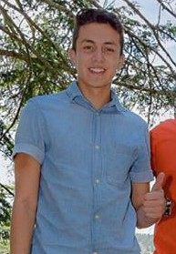
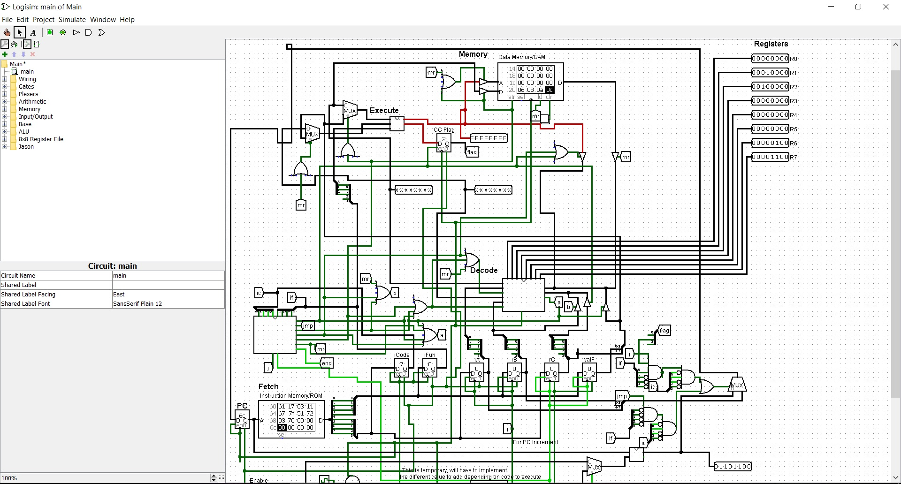
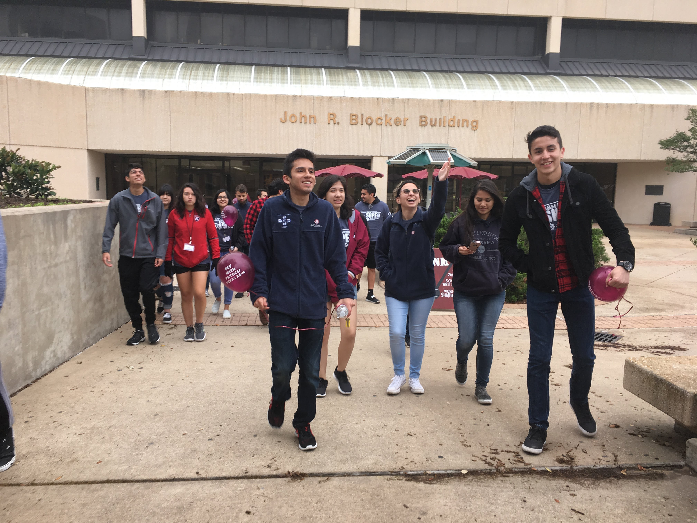
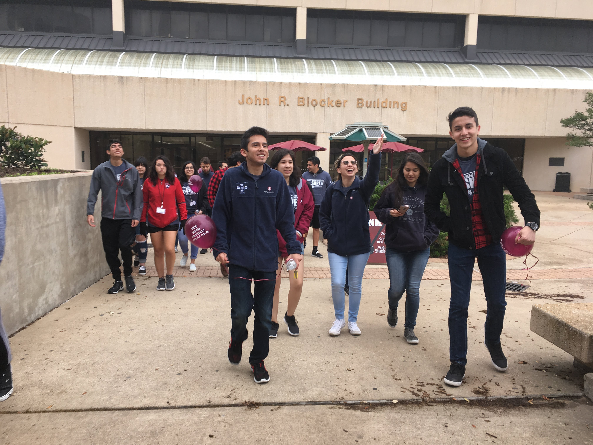
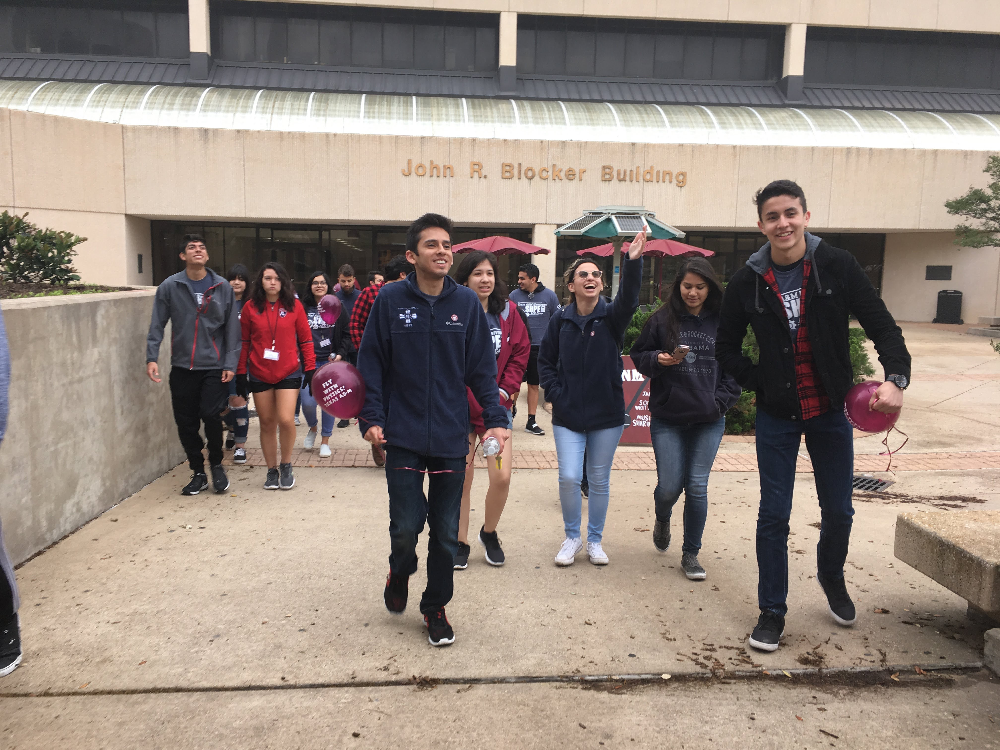

Howdy! My name is Emmanuel Oyervides and I am a Computer Science major from
Texas A&M University graduating in the spring of 2021. I am a first-generation
student from El Paso, Texas and I am determined to be the first in my family
to get a college degree. My goal is to one day work for an aerospace company
that focuses on getting people to the big red planet, Mars.
Furthermore,
I have many hobbies, one of which is writing music with my guitar, ukulele,
and piano. Music is a very big passion of mine because I believe that the
right song can make any bad day better. The second thing I'm most passionate
about is programming. I started programming my sophomore year in high school,
and I have been in love with it ever since. I've successfully competed in
competitions like UIL programming, VEX Robotics, and the FIRST Robotics
Competition, and these experiences are what made programming fun for me.
I love it when I get a coding challenge that has me stumped because I feel
like that gives me the biggest opportunity to grow as a programmer.
Whenever I am presented with a challenge and I don't know the solution
to the problem, I will always take on this challenge and find a way to
make it work and learn a new thing in the process.
Professional image
Portfolio
Spider Bot
Spider Bot is a project that I work on outside of school with 4 other teammates for the T.U.R.T.L.E
Robotics Club. The aim of this project is to create a remote-controlled robot capable of scaling
and traversing walls and ceilings in the hopes that we can use this to inspect all types of surfaces
including, but not limited to, airplanes, pipes, and building infrastructure. We are in the early
stages of the project as we are testing what is the best gap height to have the highest force to
stay on a wall with a prototype that we 3D printed ourselves. Our goal for the end of the semester
is to get a working prototype that is capable of driving on a wall or ceiling, then our next goal would
be to finally traverse corners so it can travel from one wall to another. Another goal for this
semester is to get this project approved for the senior design project requirements for our respective majors.
8-bit Processor Design

For my Computer Science 312 class on Computer Organization I designed an 8-bit
processor that is capable of matrix addition in Logisim. For this project I had
to design an Arithmetic Logic Unit, a register file, and a decoder. I then used
this in conjunction to the ROM and RAM provided by Logisim to create the
processor that could interpret my very own assembly language. This assembly
language includes commands such as jump, comparison, multiplication, and many
more commands that a basic assembly language would include. These commands are
then encoded into hexadecimal so that the processor is able to interpret the
commands correctly. I then used these basic commands in order to create a program
that was capable adding two matrices together. With these commands we can create
various programs which can include for loops, while loops, and comparisons. With
the backbone of basic programs, we can create even more complex programs and
algorithms. More information can be found
here.
IDME
IDME is an app that my friend and I developed in high school. The app was
written in JavaFX and it was submitted to the Congressional App Challenge,
which we ended up winning in our district. The aim of the app is to
facilitate taking in class attendance by using the barcodes in our id
tags and a scanner to instantly and effortlessly take attendance as soon
as the student walks into the class. This not only increases class time by
15%, but it also adds a new level a security to the school that it didn’t
previously have before. With this app in place, teachers can get straight
into the lecture right as soon as the bell rings.
Service

I think that it is very important to give back to the community. More specifically,
I think that it is important to help our youth reach their full potential, which is
why I volunteered through SHPE at Jones Elementary to help with their STEM club.
This program is aimed to get elementary school kids excited about engineering through
STEM. I helped coordinate engineering related activities, as well as touring kids through
the A&M campus, all in the efforts to inspire the next generation of engineers. I believe
this to be very important because one day the next generation is going to take over and I
think it is very important that they are prepared from a young age for all the challenges
that will arise in the future.
 
